Bathtub Faucet Replacement in Wheeling, WV
For professional bathtub faucet replacement in Wheeling, WV, you can trust GJK Plumbing to get the job done right.
- Guaranteed Workmanship
- Major Brands Installed
- Local Wheeling Experts
- Fast, Local Service
Expert Faucet Replacement in Wheeling, WV.
Don't let a faulty faucet ruin your day, contact us for fast service.
Trusted Bathtub Faucet Replacement for Homes in Wheeling, WV
Here at GJK Plumbing, we handle all aspects of bathtub faucet replacement, delivering a watertight and functional installation. Whether it's a simple repair that's no longer cutting it or an upgrade, our plumbers in Wheeling, WV are equipped to get the job done right.
Our expertise includes:
- Careful removal of old faucet units.
- Code-compliant plumbing installations
- Expert installation of all faucet types.
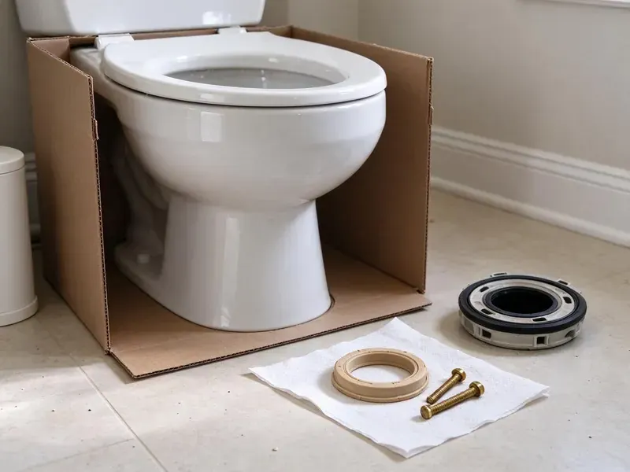
Additional Bathroom Plumbing Services in Wheeling, WV
From toilets to showers, our bathroom plumbing team in Wheeling, WV repairs, installs, and replaces every fixture with clean, code-compliant work.
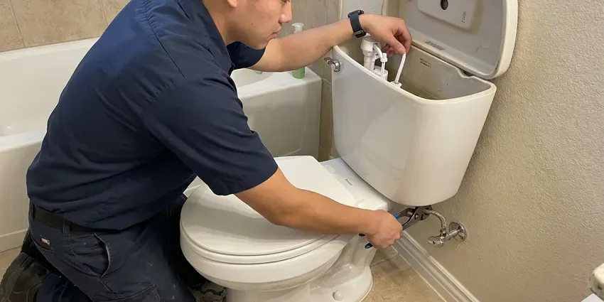
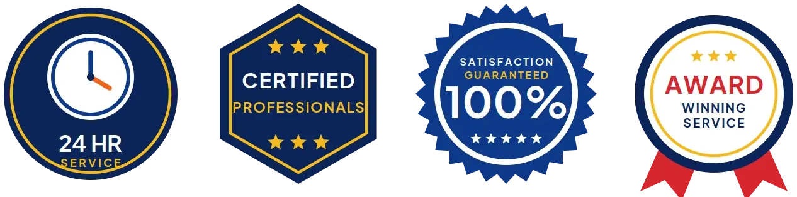
Local toilet repair by GJK Plumbing, Wheeling
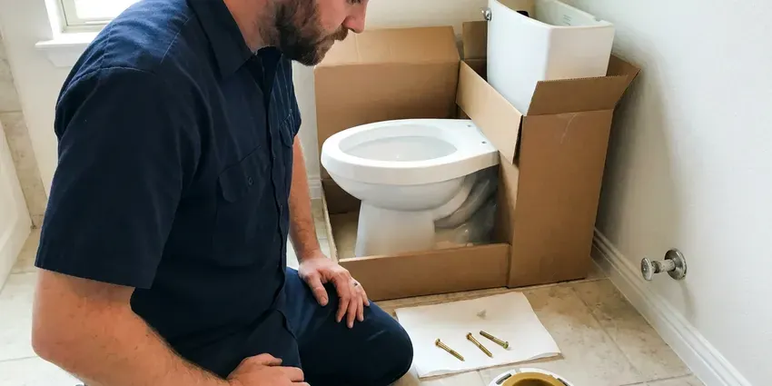
Toilet Installation in Wheeling
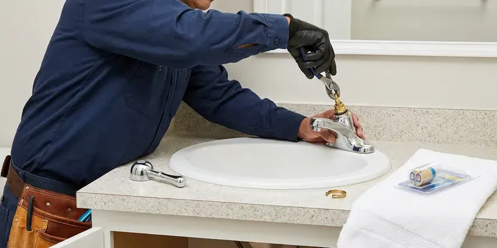
Faucet Repair service for Wheeling homeowners
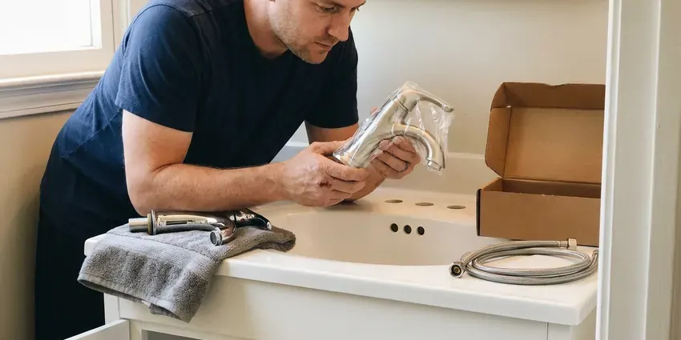
Local faucet installation by GJK Plumbing, Wheeling
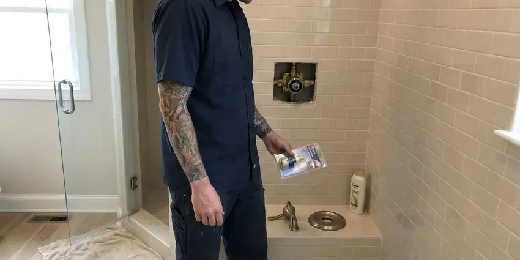
Professional shower repair, Wheeling
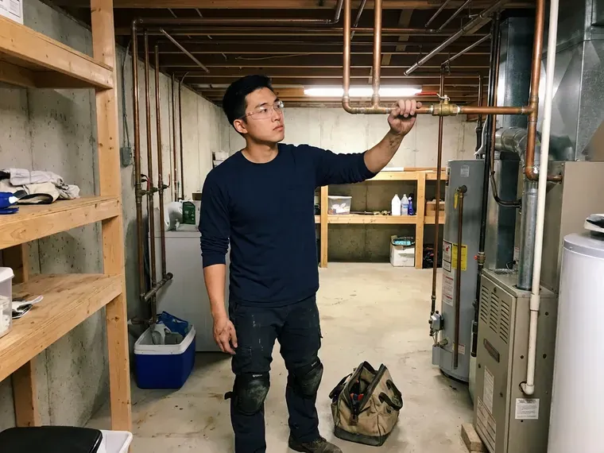
Customers
Why Choose GJK Plumbing for Bathtub Faucet Replacement in Wheeling, WV?
Our team makes sure every faucet replacement meets local codes and provides lasting performance. We focus on durable parts and proper techniques for every job.
- Right Parts, We identify the exact valve so replacement parts fit the first time.
- Tile Care, We use access panels and trim plates to reduce tile damage.
- Scald Protection, New valves include anti-scald features required by current code.
Citywide Coverage
Whether your tub is in a guest bath or a primary suite, we serve every neighborhood in Wheeling. We bring common valve parts and trim kits to get the job done in one trip.
Experienced Team
The GJK Plumbing team brings years of specialized experience to every bathtub faucet replacement project. We understand the nuances of different plumbing systems common in Wheeling homes, making for a smooth and reliable upgrade.
Safety-First Approach
We protect the safety of your home and family by making sure every bathtub faucet replacement meets all local plumbing codes in Wheeling. You can rest assured that our work is not only effective but also compliant with all regulatory standards.
Trusted Certified Wheeling Plumbing Services Professionals
At GJK Plumbing, we take pride in providing certified plumbing services throughout Wheeling, WV. Backed by recognized industry credentials, our experienced plumbers combine technical skill with genuine customer care. Whether it is repair, installation, or maintenance, we follow strict safety and quality standards to deliver lasting results you can trust.
Call Us Now PHCC Plumbing Contractor Recognition
PHCC Plumbing Contractor Recognition Better Business Bureau (BBB) Accreditation
Better Business Bureau (BBB) Accreditation Angi Certified Pro
Angi Certified Pro ISO 9001 Quality Management Certification
ISO 9001 Quality Management CertificationQuality Bathtub Faucet Replacement Services in Wheeling, WV
Moen Bathtub Faucet Replacement in Wheeling
Moen faucets are a common fixture in many Wheeling homes, offering a blend of style and durability. When a Moen bathtub faucet needs replacing due to age, damage, or a desire for a new look, our experienced plumbers are ready. We handle all Moen models, ensuring that your new faucet functions perfectly and fits neatly with your bathroom's style.
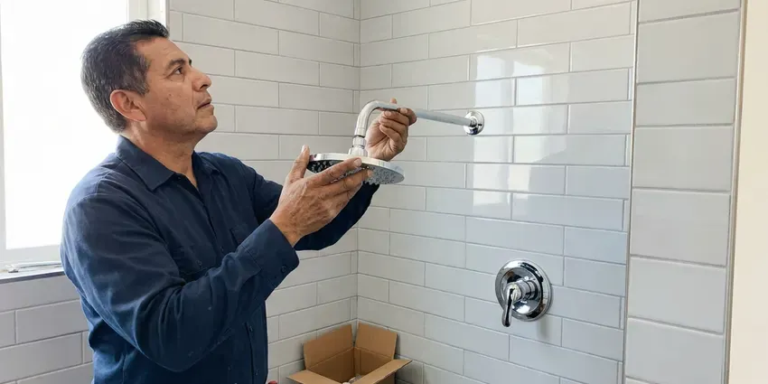
Emergency Tub Faucet Leak Service in Wheeling
A broken stem or handle can leave water running nonstop into the tub. If you cannot shut it off at the valve stops, turn off the main and call us. We prioritize runaway faucets and carry common stems and cartridges. Quick action prevents wasted water and higher bills.
Addressing Hard Water Damage in Wheeling
Water hardness in West Virginia ranges from moderate to hard in many areas, and mineral scale is a common issue for water heaters and fixtures. Hard water can lead to mineral buildup and corrosion in bathtub faucets over time, and if your faucet is showing signs of that damage, replacement might be the best long-term solution. We can replace the affected faucet and offer advice on water softeners or filtration systems to protect your new fixture in Wheeling.
Delta Bathtub Faucet Replacement in Wheeling, WV
Delta is a popular brand known for its innovative designs and reliable performance. If your Delta bathtub faucet is beyond repair or you're upgrading to a newer model, GJK Plumbing offers expert replacement services. We have experience with Delta's various lines, from their standard models to their more complex thermostatic units, ensuring a correct and leak-free installation anywhere in Wheeling, WV.
Specific Brand Faucet Replacement in Wheeling
Our plumbers are proficient in replacing faucets from all major brands, including Moen, Delta, Kohler, American Standard, and Pfister. We ensure that the replacement parts and installation methods follow the manufacturer's specifications, preserving any warranties and ensuring optimal performance for your new fixture in Wheeling.
Emergency Bathtub Faucet Replacement in Wheeling, WV
A severely leaking or broken bathtub faucet can lead to water damage if not addressed quickly. If you're facing an emergency with your bathtub faucet in Wheeling, WV, don't hesitate to call GJK Plumbing. We put first urgent issues to prevent further damage to your home and restore your plumbing system as fast as possible, even outside of regular business hours.
Corroded Bathtub Faucet Replacement in Wheeling, WV
Water hardness in West Virginia ranges from moderate to hard in many areas, and mineral scale is a common issue for water heaters and fixtures. Over time, minerals can cause corrosion and buildup on and within bathtub faucets, which leads to reduced water flow, difficulty turning handles, and even discoloration. When corrosion is extensive, cleaning isn't enough. We specialize in replacing these compromised units with durable, corrosion-resistant models designed to withstand local water conditions.
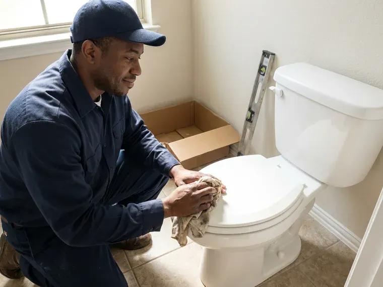
Cost-Effective Faucet Solutions in Wheeling, WV
We provide cost-effective bathtub faucet replacement options to fit various budgets without compromising on quality. Our technicians can help you choose a durable and reliable faucet that meets your needs and offers long-term value. We believe in honest pricing, so you'll know the full cost upfront for your replacement in Wheeling, WV.
Bathtub Faucet Replacement Near Me in Wheeling, WV
When the tub faucet will not stop dripping, you want a plumber close by who knows tub valves. Our team works in Wheeling every day and stocks the most common cartridges and trim kits. That means fewer return trips.
When you search for 'bathtub faucet replacement near me,' GJK Plumbing is the go-to choice for quality work and exceptional customer service. We pride ourselves on being a community-focused plumbing company, making sure that every homeowner in Wheeling has access to expert plumbing solutions for their bathtub fixtures.
GJK Plumbing at a Glance
- Licensed and insured plumbers serving Wheeling, WV
- Same-day appointments and 24/7 emergency response
- Upfront, flat-rate pricing before work begins
- 4.8-star rated by 832+ West Virginia customers
Wheeling Map
Wheeling Information
- Population
- 26,208
- Area codes
- Local
- Service area
- Wheeling and communities within 40 miles
- Nearby
- Moundsville, Weirton, New Martinsville, Morgantown
Replacing a bathtub faucet in Wheeling, WV is important for more than looks, because a hidden leak behind the wall can damage framing, subfloors and even the foundation. Rocky, steep terrain is common across West Virginia, and many homes sit on hillsides where drainage and slope movement affect buried lines.
Expert Services
Trust our professionals for reliable GJK Plumbing solutions in Wheeling, WV.
Our Specialized Plumbing Services in Wheeling, WV
At GJK Plumbing, we provide a complete range of plumbing services across Wheeling, WV. From leak detection to full system installations, our team ensures fast, precise, and affordable service for both residential and commercial properties. Explore our core services below:
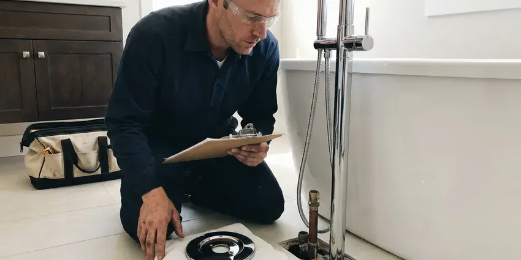
Wheeling bathroom plumbing specialists
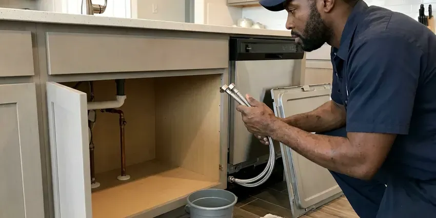
Local kitchen plumbing by GJK Plumbing, Wheeling
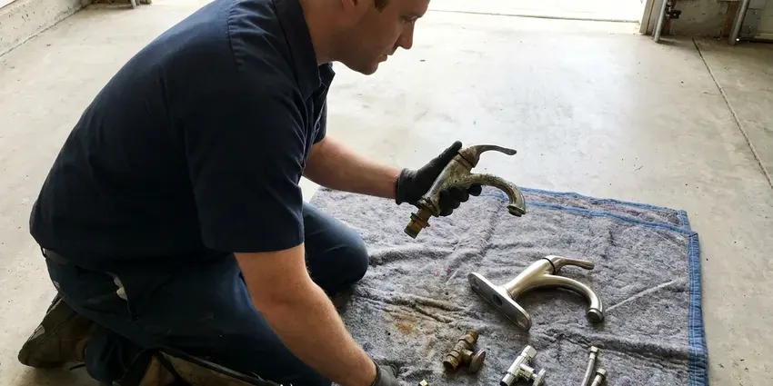
Plumbing Replacement service for Wheeling homeowners
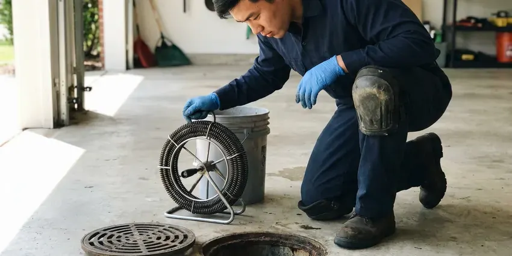
Drain Services near Wheeling
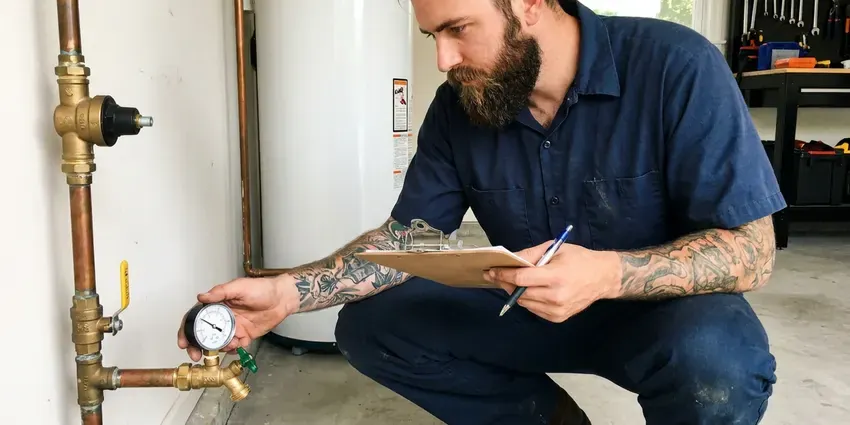
Professional plumbing maintenance, Wheeling
How Our Bathtub Faucet Replacement Process Works in Wheeling, WV
Our bathtub faucet replacement process is designed for efficiency and little disruption to your home in Wheeling.
Request a Quote
Call (681) 223-3607 and describe your tub faucet and the problem. Photos of the handles and spout help us bring the right parts.
Identify the Valve
We open the trim to identify the valve brand and condition. Then we explain repair or replacement options with upfront pricing.
Replace and Test
We install the new parts or valve, seal the trim and set the temperature limit. Every function is tested before we head out.
Frequently Asked Questions About Bathtub Faucet Replacement in Wheeling
Replacing a spout or trim kit usually costs $150 to $350. A cartridge or stem swap runs $175 to $400, and a full in-wall valve replacement typically ranges from $450 to $1,200 depending on access and tile.
Faucet repair involves fixing a specific component, like a washer or cartridge, to stop a leak or improve function. Replacement means installing an entirely new faucet fixture. We recommend replacement when the faucet is old, badly corroded, or has multiple issues that make repair uneconomical.
Spout and trim swaps take about an hour. Cartridge replacement takes one to two hours, and a full valve replacement may take between three and six hours.
A new faucet might improve perceived water pressure if your old faucet was clogged with mineral buildup or had a restricted aerator. However, it won't fix underlying low water pressure issues stemming from your home's main water supply or plumbing system.
Corroded valve bodies, discontinued parts, persistent temperature swings and leaks behind the wall are signs a full replacement is the better choice.
Spout and handle swaps are reasonable DIY projects. In-wall valve replacement involves soldering or crimping and is best done by a plumber.
Regular cleaning to prevent mineral buildup and avoiding overtightening handles can extend a faucet's life. If you have hard water, installing a whole-house water softener can significantly reduce wear and tear on all your plumbing fixtures, including bathtub faucets.
To prolong the life of your new faucet, regularly clean it with non-abrasive cleaners to prevent mineral buildup, avoid overtightening handles, and consider installing a whole-home water softener if you have very hard water. Quickly address any small leaks to prevent them from escalating.
What People Are Saying About Our Plumbing Experts?
Emily R.
I called GJK Plumbing for plumbing repair, and the technician was fast, polite, and thorough. They explained the problem clearly and fixed it the same day. I will definitely hire them again. Highly recommended!
Plumbing Repair · Wheeling, WVSofia M.
Two new toilets installed in one visit, no mess left behind, and the tech even adjusted a faucet he noticed was dripping. Fair pricing and really friendly.
Toilet Installation · Wheeling, WVMark T.
When our office needed drain cleaning, GJK Plumbing provided quick, reliable service. The plumber arrived on time and made sure every drain flowed perfectly before leaving. Very satisfied.
Drain Cleaning · Wheeling, WVRobert G.
The trenchless sewer replacement saved our front yard. They walked us through the camera inspection footage first so we knew exactly what we were paying for.
Sewer Line Replacement · Wheeling, WVDaniel K.
A pipe burst at 11 pm and they actually answered. The plumber showed up within the hour, shut everything down, and had us back to normal the next morning. Could not ask for more.
Emergency Plumbing · Wheeling, WVPatricia H.
We had a slab leak that two other companies could not find. GJK Plumbing located it in under an hour, explained our options, and the price matched the quote to the dollar.
Slab Leak Repair · Wheeling, WV